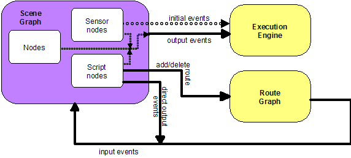

Extensible 3D (X3D)
Part 1: Architecture and base components
4 Concepts
 4.1 General
4.1 GeneralThis clause describes the X3D core concepts, including how X3D scenes are authored and played back, the run-time semantics of the X3D scene, modularization through components and profiles, conformance via support levels, data encoding semantics, programmatic access, and networking considerations.
Table 4.1 provides links to the major topics in this clause.
Conceptually, each X3D application is a 3D time-based space that contains graphic and aural objects that can be loaded over a network and dynamically modified through a variety of mechanisms. The semantics of X3D describe an abstract functional behaviour of time-based, interactive 3D, multimedia information. X3D does not define physical devices or any other implementation-dependent concepts (e.g., screen resolution and input devices). X3D is intended for a wide variety of devices and applications, and provides wide latitude in interpretation and implementation of the functionality. For example, X3D does not assume the existence of a mouse or 2D display device.
Each X3D application:
The X3D system architecture is shown in Figure 4.1.
Figure 4.1 — X3D architecture
The abstract structure of the sequence of statements that form an X3D world is specified in 7.2.5 Abstract X3D structure.
The following conventions are used throughout this part of ISO/IEC 19775:
Italics are used for field names, and are also used when new terms are introduced and equation variables are referenced.
A fixed-space font is used for URL addresses and source code examples.
Node type names are appropriately capitalized (e.g., "The Billboard node is a grouping node..."). However, the concept of the node is often referred to in lower case in order to refer to the semantics of the node, not the node itself (e.g., "To rotate the billboard...").
The form "0xhh" expresses a byte as a hexadecimal number representing the bit configuration for that byte.
Throughout this part of ISO/IEC 19775, references to International Standards cite the number of the standard and hyperlinks to the reference in 2 Normative references. References to portions of this International Standard consist of the clause or subclause number followed by the title of the clause or subclause. The text consisting of the number and title is hyperlinked to the referenced material. References to external documents that are not International Standards are denoted using the "x.[ABCD]" notation, where "x" denotes in which clause the reference is described and "[ABCD]" is an abbreviation of the reference title. For the Bibliography, the "x." is omitted.
In addition, the first reference to a node or node type in a subclause will be hyperlinked to the definition of that node or node type.
EXAMPLE "2.[ABCD]" refers to a reference described in 2 Normative references and [ABCD] refers to a reference described in the Bibliography.
4.2 Authoring and playbackThe interpretation, execution, and presentation of X3D files occurs using a mechanism known as a browser, which displays the shapes and sounds in the scene graph. This presentation is known as a virtual world and is navigated in the browser by a human or mechanical entity, known as a user. The world is displayed as if experienced from a particular location; that position and orientation in the world is known as the viewer. The browser may provide navigation paradigms (such as walking or flying) that enable the user to move the viewer through the virtual world.
In addition to navigation, the browser provides a limited mechanism allowing the user to interact with the world through sensor nodes in the scene graph hierarchy. Sensors respond to user interaction with geometric objects in the world, the movement of the user through the world, or the passage of time. Additionally, the X3D Scene Access Interface (SAI) defined in Part 2 of this International Standard provides mechanisms for getting user input, and for getting and setting the current viewpoint. To provide navigation capabilities, a viewer may use the SAI to provide the user with the ability to navigate. Additionally, authors may use scripting or programming languages with bindings to the SAI to implement their own navigation algorithms. Other profiles may specify navigation capabilities as a requirement of the viewer; implementations of such viewers will typically do so by making use of the SAI.
The visual presentation of geometric objects in an X3D world follows a conceptual model designed to resemble the physical characteristics of light. The X3D lighting model describes how appearance properties and lights in the world are combined to produce displayed colours (see 17 Lighting component for details).
A generator is a human or computerized creator of X3D files. It is the responsibility of the generator to ensure the correctness of the X3D file and the availability of supporting assets (e.g., images, audio clips, other X3D files) referenced therein. It is also the responsibility of the generator to insure that the functionality represented in the X3D file is correctly stated in the profile, component and level information in the header statement of the file.
A loader is a program responsible for loading X3D content but does not apply any run-time execution to the content. Geometry is presented as though time has not run, although the loader is free to load textures and other remotely defined content. A time zero loader is typically found in modelling tools that intend to construct or modify existing X3D content without evaluating the run-time aspects of the specification.
A second form of loader may load files and allow run-time execution of content, but it does so as part of a larger user interface and 3D graphics rendering engine. Such loaders might be used to load individual models such as trees in a game environment, but the run-time evaluation of the X3D content is dependent on the external application, and is not self contained in the same fashion as an X3D browser.
The basic unit of the X3D run-time environment is the scene graph. This structure contains all the objects in the system and their relationships. Relationships are contained along several axes of the scene graph. The transformation hierarchy describes the spatial relationship of rendering objects. The behavior graph describes the connections between fields and the flow of events through the system.
An X3D file contains zero or more root nodes. The root nodes for an X3D file are those nodes defined by the node statements or USE statements that are not contained in other node or PROTO statements. Root nodes shall be children nodes as specified in 10 Grouping component or the LayerSet node as specified in 35.4.2 LayerSet.
An X3D scene graph is a directed acyclic graph. Nodes can contain specific fields with one or more children nodes which participate in the hierarchy. These may, in turn, contain nodes (or instances of nodes). This hierarchy of nodes is called the scene graph. Each arc in the graph from A to B means that node A has a field whose value directly contains node B. See [FOLEY] for details on hierarchical scene graphs.
The descendants of a node are all of the nodes in its fields, as well as all of those nodes' descendants. The ancestors of a node are all of the nodes that have the node as a descendant.
The transformation hierarchy includes all of the root nodes and root node descendants that are considered to have one or more particular locations in the virtual world. X3D includes the notion of local coordinate systems, defined in terms of transformations from ancestor coordinate systems. The coordinate system in which the root nodes are displayed is called the world coordinate system.
An X3D browser's task is to present an X3D file to the user; it does this by presenting the transformation hierarchy to the user. The transformation hierarchy describes the directly perceptible parts of the virtual world.
Some nodes, such as sensors and environmental nodes, are in the scene graph but not affected by the transformation hierarchy. These include CoordinateInterpolator, Script, TimeSensor, and WorldInfo.
Some nodes, such as Switch or LOD, contain a list of children, of which at most one is traversed during rendering. However, for the purposes of computing scene position, all children of these nodes are considered to be part of the transformation hierarchy, whether they are traversed during rendering or not. For instance, a Viewpoint node which is a child of a Switch whose whichChoice field is set to -1 (indicating that none of its children should be traversed during rendering) still uses the local coordinate space of the Switch to determine its position in the scene.
The transformation hierarchy shall be a directed acyclic graph; a node in the transformation hierarchy that is its own ancestor is considered invalid and shall be ignored. The following is an example of a node in the scene graph that is its own ancestor:
DEF T Transform {
children [
Shape { ... }
USE T
]
}
ISO/IEC 19775 defines the unit of measure of the world coordinate system to be metres. All other coordinate systems are built from transformations based from the world coordinate system. Table 4.2 lists standard units for ISO/IEC 19775.
| Category | Unit |
|---|---|
| Linear distance | Metres |
| Angles | Radians |
| Time | Seconds |
| Colour space | RGB ([0.,1.], [0.,1.], [0.,1.]) |
ISO/IEC 19775 uses a Cartesian, right-handed, three-dimensional coordinate system. By default, the viewer is on the Z-axis looking down the -Z-axis toward the origin with +X to the right and +Y straight up. A modelling transformation (see the Transform node definition in 10 Grouping component and the Billboard node definition in 23 Navigation component) or viewing transformation (see the X3DViewpointNode node type definition in 23 Navigation component can be used to alter this default projection.
The event model of X3D allows the declaration of connections between fields (routes) and a model for the propagation of events along those connections. The behavior graph is the collection of these field connections. It can be changed dynamically by rerouting, adding or breaking connections. Events are injected into the system and propagate through the behavior graph in a well defined order.
Fields can only be routed to other fields with the same data type, unless a component supports an extension to this rule.
4.4 Run-time environmentThe X3D run-time environment maintains the current state of the scene graph, renders the scene as needed, receives input from a variety of sources (Sensors) and performs changes to the scene graph in response to instructions from the behavioral system. The X3D run-time environment manages the life cycle of objects, including built-in and user-defined objects and programmatic scripts. The run-time environment coordinates the processing of Events, the primary means of generating behaviors in X3D. The run-time environment also manages interoperation between the X3D browser and host application for file delivery, hyperlinking, page integration and external programmatic access.
The run-time environment manages objects. X3D supports several types of built-in objects that contain generally useful functionality in the run-time environment. There are built-in objects to represent data structures such as an SFVec3f 3D vector value, nodes such as geometry (e.g., Cylinder), and ROUTEs between nodes. Each node contains zero or more fields that define storage for data values, and/or zero or more events for sending messages to/from the object. Nodes are instantiated by declaring them in a file or by using procedural code at run-time. The author may create new node types using the prototyping mechanism (see 4.4.4 Prototype semantics). These nodes become part of the run-time environment and behave exactly like built-in nodes. New nodes can be created declaratively by including a prototype declaration in a file, by including an external prototype referencing a prototype declaration in a separate location, or by using a native prototype declaration provided by the run-time environment itself. PROTOs may only be used to create other nodes, not fields or routes.
Events are the primary means of generating behaviors in the X3D run-time environment. Events are used throughout X3D: driving time-based animations; handling object picking; detecting user movement and collision; changing the scene graph hierarchy. The run-time environment manages the propagation of events through the system and order of evaluation according to a well-defined set of rules.
An author of X3D content can control the creation and management of scenes, rendering and behavior, and loading of media assets. The loading and incorporation of authored extensions, which can be written in X3D or an external language, can also be controlled. The ability to make content-defined extensions is provided in profiles that support the Prototyping mechanism.
The X3D system is made up of abstract individual entities called objects. This part of ISO/IEC 19775 defines a functional specification for each object type but does not dictate implementation. A compliant implementation of an object shall behave according to its functional specification as provided in 5 Field type reference, clauses 7 through 40 describing components, Part 2 of ISO/IEC 19775 or additional parts of this standard that define object, field or node types. An X3D author arranges objects in the scene graph using one of the declarative X3D encodings described in ISO/IEC 19776 or other future encoding formats, or at run time using built-in scripting (if the supported profile provides it) or some other form of programmatic access to the scene graph (see Part 2 of ISO/IEC 19775).
Objects representing lightweight concepts such as data storage and operations on data of that type are called fields and are derived from the X3DField object. Objects representing more complete spatial or temporal processing concepts are called nodes and are derived from the X3DNode object. Nodes contain one or more fields that hold data values or send or receive events for that node.
Some nodes implement additional functionality by inheritance of interfaces that represent common properties or functionality, such as bounding boxes for visual objects and grouping nodes or a specification that a particular object represents metadata. In addition, X3D defines object types for accessing scene graph information not stored in fields or nodes, such as ROUTEs, PROTO declarations, Component/Profile information and world metadata.
A field may contain either a single value of the given type or an array of such types. Throughout this document, a field type containing a single value is said to be of the given type and is prefixed by the characters SF (e.g., field a is of type SFVec3f), while a field containing an array has its type prefixed by the characters MF (e.g., field b is of type MFVec3f). A field may contain a reference to one or more nodes by using the SFNode and MFNode field types.
Each object has the following common characteristics:
An object derived from X3DNode has the following additional characteristics:
Node implementations can come from two sources, built-in nodes and prototypes. Built-in nodes are nodes that are available to the author as specified by the applicable profile and/or component declarations. Different components define different sets of built-in nodes.
Additionally, X3D supports content extensions using prototypes. Prototypes are objects that the author creates using PROTO or EXTERNPROTO statements. These objects are written in the same declarative notation used to describe nodes in the scene graph. They add new object types to the system which are only available for the lifetime of the session into which they are loaded. Some profiles may not include support of these extension capabilities. The semantics of prototypes are discussed in 4.4.4, Prototype semantics, and 4.4.5, External prototype semantics.
Both prototypes and built-in nodes are available for instantiation using similar mechanisms. An object can be instantiated declaratively or at run-time using the SAI services specified in Part 2 of ISO/IEC 19775. All prototypes inherit from the base node type X3DPrototypeInstance.
Fields define the persistent state of nodes, and values which nodes may send or receive in the form of events. X3D supports four types of access to a node's fields:
An inputOutput field can receive events like an inputOnly field, can generate events like an outputOnly field, and can be stored in X3D files like an initializeOnly field. An inputOutput field named zzz can be referred to as 'set_zzz' and treated as an inputOnly, and can be referred to as 'zzz_changed' and treated as an outputOnly field. Within ISO/IEC 19775, fields with inputOutput access or inputOnly access are collectively referred to as input fields, fields with inputOutput access or outputOnly access are collectively referred to as output fields, and the events these fields receive and send are called input events and output events, respectively.
The initial value of an inputOutput field is its value in the X3D file, or the default value for the node in which it is contained, if a value is not specified. When an inputOutput field receives an event it shall generate an event with the same value and timestamp. The following sources, in precedence order, shall be used to determine the initial value of the inputOutput field:
The recommendations for naming initializeOnly fields, inputOutput fields, outputOnly fields, and inputOnly fields for built-in nodes are as follows:
Most object types derive some of their interfaces and functionality from other object types in the system. These are known as its supertypes, and an object is said to be derived from these supertypes. Likewise, these supertypes may derive their capabilities from other object types, forming a chain all the way to a small number of base types from which all the others are ultimately derived. The graph describing the relationship between all object types in the system is called the interface hierarchy. In this part of ISO/IEC 19775, the object hierarchy specifies conceptual relationships between objects but does not necessarily dictate actual implementation.
Figure 4.2 depicts the object hierarchy for object types defined in this part of ISO/IEC 19775 for all versions. A specification of which object types are available for which versions may be found in Annex L Version content.
NOTE Not all object types are supported in certain component levels, profiles or versions; refer to the individual component and profile specifications in this part of ISO/IEC 19775 for details.
X3DField -+------------- X3DArrayField -+
+- SFBool +- MFBool
+- SFColor +- MFColor
+- SFColorRGBA +- MFColorRGBA
+- SFDouble +- MFDouble
+- SFFloat +- MFFloat
+- SFImage +- MFImage
+- SFInt32 +- MFInt32
+- SFMatrix3d +- MFMatrix3d
+- SFMatrix3f +- MFMatrix3f
+- SFMatrix4d +- MFMatrix4d
+- SFMatrix4f +- MFMatrix4f
+- SFNode +- MFNode
+- SFRotation +- MFRotation
+- SFString +- MFString
+- SFTime +- MFTime
+- SFVec2d +- MFVec2d
+- SFVec2f +- MFVec2f
+- SFVec3d +- MFVec3d
+- SFVec3f +- MFVec3f
+- SFVec4d +- MFVec4d
+- SFVec4f +- MFVec4f
X3DBoundedObject
X3DFogObject
X3DPickableObject
X3DProgrammableShaderObject
X3DMetadataObject
X3DUrlObject
X3DNode
|
+- Contact
+- Contour2D
+- EaseInEaseOut
+- GeoOrigin
+- LayerSet
+- MetadataDouble (X3DMetadataObject)*
+- MetadataFloat (X3DMetadataObject)*
+- MetadataInteger (X3DMetadataObject)*
+- MetadataSet (X3DMetadataObject)*
+- MetadataString (X3DMetadataObject)*
+- NurbsTextureCoordinate
+- RigidBody
+- ShaderPart (X3DUrlObject)*
+- ShaderProgram (X3DUrlObject, X3DProgrammableShaderObject)*
+- TextureProperties
|
+- X3DAppearanceNode -+- Appearance
|
+- X3DAppearanceChildNode -+- FillProperties
| +- LineProperties
| |
| +- X3DMaterialNode -+- Material
| | +- TwoSidedMaterial
| |
| +- X3DShaderNode -+- ComposedShader (X3DProgrammableShaderObject)*
| | +- PackagedShader (X3DUrlObject, X3DProgrammableShaderObject)*
| | +- ProgramShader
| |
| +- X3DTextureNode -+- MultiTexture
| | |
| | +- X3DEnvironmentTextureNode -+- ComposedCubeMapTexture
| | | +- GeneratedCubeMapTexture
| | | +- ImageCubeMapTexture (X3DUrlObject)*
| | |
| | +- X3DTexture2DNode -+- ImageTexture (X3DUrlObject)*
| | | +- MovieTexture (X3DSoundSourceNode, X3DUrlObject)*
| | | +- PixelTexture
| | |
| | +- X3DTexture3DNode -+- ComposedTexture3D
| | +- ImageTexture3D (X3DUrlObject)*
| | +- PixelTexture3D
| |
| +- X3DTextureTransformNode +- MultiTextureTransform
| -+- TextureTransform
| +- TextureTransformMatrix3D
| +- TextureTransform3D
|
|
+- X3DFontStyleNode -+- FontStyle
| +- ScreenFontStyle
|
+- X3DGeometryNode -+- Arc2D
| +- ArcClose2D
| +- Box
| +- Circle2D
| +- Cone
| +- Cylinder
| +- Disk2D
| +- ElevationGrid
| +- Extrusion
| +- GeoElevationGrid
| +- IndexedLineSet
| +- LineSet
| +- PointSet
| +- Polyline2D
| +- Polypoint2D
| +- Rectangle2D
| +- Sphere
| +- Text
| +- TriangleSet2D
| |
| +- X3DComposedGeometryNode -+- IndexedFaceSet
| | +- IndexedTriangleFanSet
| | +- IndexedTriangleSet
| | +- IndexedTriangleStripSet
| | +- IndexedQuadSet
| | +- QuadSet
| | +- TriangleFanSet
| | +- TriangleSet
| | +- TriangleStripSet
| |
| +- X3DParametricGeometryNode -+- NurbsCurve
| +- NurbsSweptSurface
| +- NurbsSwungSurface
| |
| +- X3DNurbsSurfaceGeometryNode -+- NurbsPatchSurface
| +- NurbsTrimmedSurface
|
+- X3DGeometricPropertyNode -+- FogCoordinate
| +- HAnimDisplacer
| |
| |+- X3DColorNode -+- Color
| | +- ColorRGBA
| |
| +- X3DCoordinateNode -+- Coordinate
| | +- CoordinateDouble
| | +- GeoCoordinate
| |
| +- X3DNormalNode -+- Normal
| |
| +- X3DTextureCoordinateNode -+- MultiTextureCoordinate
| | +- TextureCoordinate
| | +- TextureCoordinate3D
| | +- TextureCoordinate4D
| | +- TextureCoordinateGenerator
| |
| +- X3DVertexAttributeNode -+- FloatVertexAttribute
| +- Matrix3VertexAttribute
| +- Matrix4VertexAttribute
|
+- X3DLayerNode -+- Layer
| +- LayoutLayer
|
+- X3DNBodyCollisionSpaceNode (X3DBoundedObject)* -+- CollisionSpace
|
+- X3DNurbsControlCurveNode -+- ContourPolyline2D
| +- NurbsCurve2D
|
+- X3DParticleEmitterNode -+- ConeEmitter
| +- ExplosionEmitter
| +- PointEmitter
| +- PolylineEmitter
| +- SurfaceEmitter
| +- VolumeEmitter
|
+- X3DParticlePhysicsModelNode -+- BoundedPhysicsModel
| +- ForcePhysicsModel
| +- WindPhysicsModel
|
+- X3DProtoInstance
|
+- X3DRigidJointNode -+- BallJoint
| +- DoubleAxisHingeJoint
| +- MotorJoint
| +- SingleAxisHingeJoint
| +- SliderJoint
| +- UniversalJoint
|
+- X3DChildNode -+- BooleanFilter
+- BooleanToggle
+- ClipPlane
+- CollisionCollection
+- DISEntityManager
+- GeoLOD (X3DBoundedObject)*
+- HAnimHumanoid (X3DBoundedObject)*
+- Inline (X3DUrlObject, X3DBoundedObject)*
+- LocalFog (X3DFogObject)*
+- NurbsOrientationInterpolator
+- NurbsPositionInterpolator
+- NurbsSet (X3DBoundedObject)*
+- NurbsSurfaceInterpolator
+- RigidBodyCollection
+- StaticGroup (X3DBoundedObject)*
|
+- X3DBindableNode -+- Fog (X3DFogObject)*
| +- GeoViewpoint
| +- NavigationInfo
| |
| +- X3DBackgroundNode -+- Background
| | +- TextureBackground
| |
| +- X3DViewpointNode -+- OrthoViewpoint
| +- Viewpoint
| +- ViewpointGroup
|
+- X3DFollowerNode -+- X3DChaserNode -+- OrientationChaser
| | +- PositionChaser
| | +- PositionChaser2D
| | +- ScalerChaser
| |
| +- X3DDamperNode -+- ColorDamper
| +- CoordinateDamper
| +- OrientationDamper
| +- PositionDamper
| +- PositionDamper2D
| +- TexCoordDamper
|
+- X3DGroupingNode (X3DBoundedObject)* -+- Anchor
| +- Billboard
| +- CADAssembly (X3DProductStructureChildNode)*
| +- CADLayer
| +- CADPart (X3DProductStructureChildNode)*
| +- Collision (X3DSensorNode)*
| +- EspduTransform (X3DSensorNode)*
| +- GeoLocation
| +- GeoTransform
| +- Group
| +- HAnimJoint
| +- HAnimSegment
| +- HAnimSite
| +- LayoutGroup
| +- LOD
| +- PickableGroup (X3DPickableObject)*
| +- ScreenGroup
| +- Switch
| +- Transform
| |
| +- X3DViewportNode -+- Viewport
|
+- X3DInfoNode --+- DISEntityTypeMapping
| +- GeoMetadata
| +- WorldInfo
|
+- X3DInterpolatorNode -+- ColorInterpolator
| +- CoordinateInterpolator
| +- CoordinateInterpolator2D
| +- GeoPositionInterpolator
| +- NormalInterpolator
| +- OrientationInterpolator
| +- PositionInterpolator
| +- PositionInterpolator2D
| +- ScalarInterpolator
| +- SplinePositionInterpolator
| +- SplinePositionInterpolator2D
| +- SplineScalarInterpolator
| +- SquadOrientationInterpolator
|
+- X3DLayoutNode -+- Layout
|
+- X3DLightNode -+- DirectionalLight
| +- PointLight
| +- SpotLight
|
+- X3DNBodyCollidableNode (X3DBoundedObject)* -+- CollidableOffset
| +- CollidableShape
|
+- X3DProductStructureChildNode -+- CADAssembly (X3DGroupingNode)*
| +- CADFace (X3DBoundedObject)*
| +- CADPart (X3DGroupingNode)*
|
+- X3DScriptNode (X3DUrlObject)* -+- Script
|
+- X3DSensorNode -+- Collision (X3DGroupingNode)*
| +- CollisionSensor
| +- EspduTransform (X3DGroupingNode)*
| +- ReceiverPdu (X3DBoundedObject)*
| +- SignalPdu (X3DBoundedObject)*
| +- TimeSensor (X3DTimeDependentNode)*
| +- TransmitterPdu (X3DBoundedObject)*
| |
| +- X3DEnvironmentalSensorNode -+- GeoProximitySensor
| | +- ProximitySensor
| | +- TransformSensor
| | +- VisibilitySensor
| |
| +- X3DKeyDeviceSensorNode -+- KeySensor
| | +- StringSensor
| |
| +- X3DNetworkSensorNode +- LoadSensor
| |
| +- X3DPickingNode -+- LinePicker
| | +- PointPicker
| | +- PrimitivePicker
| | +- VolumePicker
| |
| +- X3DPointingDeviceSensorNode -+- X3DDragSensorNode -+- CylinderSensor
| | +- PlaneSensor
| | +- SphereSensor
| |
| +- X3DTouchSensorNode -+- GeoTouchSensor
| +- TouchSensor
|
+- X3DSequencerNode -+- BooleanSequencer
| +- IntegerSequencer
|
+- X3DShapeNode (X3DBoundedObject) -+- ParticleSystem
| +- Shape
|
+- X3DSoundNode -+- Sound
|
+- X3DTimeDependentNode -+- TimeSensor (X3DSensorNode)*
| |
| +- X3DSoundSourceNode -+- AudioClip (X3DUrlObject)*
| +- MovieTexture (X3DTexture2DNode, X3DUrlObject)*
|
+- X3DTriggerNode -+- BooleanTrigger
+- IntegerTrigger
+- TimeTrigger
* = Derived from multiple interfaces
Figure 4.2 — Interface hierarchy
The object hierarchy defines both abstract interfaces and concrete node types. Abstract interfaces define functionality that is inherited by other interfaces and/or nodes, but are never instantiated in the scene graph as objects. Concrete node types derive from one or more abstract interfaces and may be instantiated in the scene graph. Thus, the live scene graph consists only of instances of concrete node types. Components defined in this part of ISO/IEC 19775 are required to implement the functionality of abstract interfaces only insofar as that functionality is made available via one of the derived concrete node types. Part 2 of ISO/IEC 19775 defines the means by which applications may access the functionality provided in both abstract interfaces and concrete nodes via programmatic means.
The two main types of object from which most others are derived are X3DNode and X3DField. Nodes are the objects used in the declarative language to form the scene graph, while fields are contained within nodes and hold the data items for nodes. Some field objects contain simple data values like integers or arrays of strings. Other field objects contain references to nodes. It is this ability of X3DNode to contain X3DField, and X3DField to contain references to X3DNode, that makes it possible for X3D to form scene graph hierarchies.
EXAMPLE
Transform { translation 1 2 3
children [
Shape {
geometry Box { }
}
Group {
children [ ... ]
}
]
}
In the above example, the Transform contains a simple field, translation, which contains a vector of 3 numbers. It also contains a children field which may contain an array of other nodes. In this case it has two, a Shape and a Group. The Shape and the Group both contain fields which may have other objects as well.
Derivation makes it possible to strongly type all objects. In the above example, the children field is constrained to contain a list of objects derived from an object type called X3DChildNode. Both Shape and Group are derived (indirectly) from this object and can therefore be placed in the children field. The geometry field of Shape, on the other hand, can only contain a single node derived from X3DGeometryNode. Box is derived from this object and can therefore be placed in the geometry field. But Box is not derived from X3DChildNode, so it cannot be placed in the children field. Likewise, Group is not derived from X3DGeometryNode and can therefore not be placed in the geometry field.
The above example exhibits another quality of derivation. Transform is derived from X3DGroupingNode and therefore inherits its children field. This makes the specification of Transform simpler because it does not need to describe the functionality of the children field. Because it is derived from X3DGroupingNode, the author knows it contains a children field which behaves like the one in Group which is also derived from X3DGroupingNode.
There are several ways to modify the fields of an object. Using one of the X3D file formats, an author can declare a set of nodes, the initial state of their fields, and interconnections between the fields called Routes. X3D uses an event propagation, or dataflow model to change the values of fields at run-time. As part of its abstract specification, the behavior of a node in response to events sent to its fields, and the conditions under which its fields send events out, is described.
EXAMPLE It is possible to create a scene with run-time behavior using only this event propagation model:
DEF TS TimeSensor {
loop TRUE
cycleInterval 5
}
DEF I PositionInterpolator {
key [ 0 0.5 1 ]
keyValue [ 0 -1 0, 0 1 0, 0 -1 0 ]
}
DEF T Transform {
children [
Shape {
geometry Box { }
}
]
}
ROUTE ts.fraction_changed TO I.set_fraction
ROUTE I.value_changed TO T.set_translation
This example bounces a box up and down repeatedly over a five-second interval. The TimeSensor object is defined to send an event continuously out of its fraction field. This event sends a floating point value which varies from 0 to 1 over a 5 second interval, as specified by the cycleInterval. Its loop field tells it to do so repeatedly. This fraction value is sent to the fraction field of a PositionInterpolator. This object is defined to send an event out of its value field whenever it receives an event on its fraction field. The value is determined by the key and keyValue fields. In this case it sends a vector whose y value varies between -1 and +1 and back again over the interval. This value is sent to the translation field of the Transform node. This node is defined to set the position of its children according to the value of translation. 4.4.8.2 Routes contains more information on routing.
The routing mechanism is simple, but is limited to changing field values of nodes, and only changes that are designed into a given node set. For greater flexibility, some profiles provide programmatic access to objects in the system. This allows field values to be set and read, and functions to be called. Mechanisms are also provided to allow PROTO objects to be found, which in turn allows objects of that type to be instantiated.
There are two types of programmatic access in X3D: External access (EXAMPLE access from a containing HTML page or embedding native application) and Internal scripts using any of the supported scripting languages.
Programmatic access to objects is provided via interfaces to those objects. The interface of an object (its set of data and function properties) is specified, and is also referred to as the object type. An object type that represents a node is also referred to as a node type. Object types may be either abstract or concrete. Abstract object types are not instantiable. Instead, they are used to derive other object types or to indicate that a field may contain a node of any of the derivative node types. Concrete node types are those derived from abstract node types and are instantiable. A compliant implementation of an object's interface shall support the interface specifications as defined in Part 2 of ISO/IEC 197775.
See 4.9, Application programmer interfaces for additional information.
Nodes have a life cycle: they are created, used and eventually destroyed. A node is considered live if one or more of the following is true:
Rules b and c are applied recursively to cover the entire live scene graph.
Nodes instanced from a file are created implicitly by the browser upon encountering a node instance or upon instancing a prototype's scene graph. Nodes may also be instanced programmatically; in this case there are additional discrete steps in the node's life cycle. Refer to Part 2 of ISO/IEC 197775 for more details.
Node names are limited in scope to a single X3D file, prototype definition,
or string submitted to either CreateX3DFromString, CreateX3DFromStream, or
CreateX3DFromURL browser service or a construction for SFNodes within a script.
The USE statement does not create a copy of the node. Instead, the same node is
inserted into the scene graph a second time, resulting in the node having
multiple parents (see
4.3.5 Transformation hierarchy, for restrictions on self-referential nodes).
Node names shall be unique in the context within which the associated DEF
keyword occurs.
The PROTO statement defines a new node type in terms of already defined (built-in or prototyped) node types. Once defined, prototyped node types may be instantiated in the scene graph exactly like the built-in node types.
Node type names shall be unique in each X3D file. The results are undefined if a prototype is given the same name as a built-in node type or a previously defined prototype in the same scope.
The prototype interface defines the fields and field access types for the new node type. The interface declaration includes the types, names and default values (for initializeOnly and inputOutput fields) for the prototype's fields.
The interface declaration may contain inputOutput field declarations, which are a convenient way of defining an initializeOnly field, inputOnly field, and outputOnly field at the same time. If an inputOutput field named zzz is declared, it is equivalent to separately declaring an initializeOnly field named zzz, an inputOnly field named set_zzz, and an outputOnly field named zzz_changed.
Each prototype instance can be considered to be a complete copy of the prototype, with its own field values and copy of the prototype definition. A prototyped node type is instantiated using standard node syntax. For example, the following prototype (which has an empty interface declaration):
PROTO Cube [ ] { Box { } }
may be instantiated as follows:
Shape { geometry Cube { } }
It is recommended that user-defined field names defined in PROTO interface declarations statements follow the naming conventions described in 4.4.2.2 Field semantics.
If an outputOnly field in the prototype declaration is associated with an inputOutput field in the prototype definition, the initial value of the associated outputOnly field shall be the initial value of the inputOutput field. If the outputOnly field is associated with multiple inputOutput fields, the results are undefined.
A prototype definition consists of one or more nodes, nested PROTO statements, and ROUTE statements. The first node type determines how instantiations of the prototype can be used in an X3D file. An instantiation is created by filling in the parameters of the prototype declaration and inserting copies of the first node (and its scene graph) wherever the prototype instantiation occurs.
EXAMPLE If the first node in the prototype definition is a Material node, instantiations of the prototype can be used wherever a Material node can be used. Any other nodes and accompanying scene graphs are not part of the transformation hierarchy, but may be referenced by ROUTE statements or Script nodes in the prototype definition.
Nodes in the prototype definition may have their fields associated with the fields of the prototype interface declaration by using IS statements in the body of the node. When prototype instances are read from an X3D file, field values for the fields of the prototype interface may be given. If given, the field values are used for all nodes in the prototype definition that have IS statements for those fields. Similarly, when an input field of a prototype instance is sent an event, the event is delivered to all nodes that have IS statements for that field. When a node in a prototype instance generates an output event that has an IS statement, the event is sent to any input fields connected (via ROUTE) to the prototype instance's output field.
IS statements may appear inside the prototype definition wherever fields may appear. IS statements shall refer to fields defined in the prototype declaration. Results are undefined if an IS statement refers to a non-existent declaration. Results are undefined if the type of the field being associated by the IS statement does not match the type declared in the prototype's interface declaration. For example, it is illegal to associate an SFColor with an SFVec3f. It is also illegal to associate an SFColor with an MFColor or vice versa.
Results are undefined if an IS statement:
An inputOutput field in the prototype interface may be associated only with an inputOutput field in the prototype definition, but an inputOutput field in the prototype definition may be associated with either an inputOutput field, inputOnly field, or outputOnly field in the prototype interface. When associating an inputOutput field in a prototype definition with an inputOnly field or outputOnly field in the prototype declaration, it is valid to use either the shorthand inputOutput field name (e.g., translation) or the explicit field name (e.g., set_translation or translation_changed). Table 4.3 defines the rules for mapping between the access types of fields in a prototype declarations and the access types for fields in its primary scene graph's nodes (yes denotes a legal mapping, no denotes an error).
Table 4.3 — Rules for mapping PROTOTYPE declarations to node instances
| Prototype declaration | ||||||||||||||||||||||||||
| Prototype definition |
|
Results are undefined if a field of a node in the prototype definition is associated with more than one field in the prototype's interface (i.e., multiple IS statements for a field in a node in the prototype definition), but multiple IS statements for the fields in the prototype interface declaration is valid. Results are undefined if a field of a node in a prototype definition is both defined with initial values (i.e., field statement) and associated by an IS statement with a field in the prototype's interface. If a prototype interface has an outputOnly field E associated with multiple outputOnly fields in the prototype definition EDi, the value of E is the value of the field that generated the event with the greatest timestamp. If two or more of the outputOnly fields generated events with identical timestamps, results are undefined.
Prototype definitions appearing inside a prototype definition (i.e., nested) are local to the enclosing prototype. IS statements inside a nested prototype's implementation may refer to the prototype declarations of the innermost prototype.
A PROTO statement establishes a DEF/USE name scope separate from the rest of the scene and separate from any nested PROTO statements. Nodes given a name by a DEF construct inside the prototype may not be referenced in a USE construct outside of the prototype's scope. Nodes given a name by a DEF construct outside the prototype scope may not be referenced in a USE construct inside the prototype scope.
A prototype may be instantiated in a file anywhere after the completion of the prototype definition. A prototype may not be instantiated inside its own implementation (i.e., recursive prototypes are illegal).
The EXTERNPROTO statement defines a new node type. It is equivalent to the PROTO statement, with two exceptions. First, the implementation of the node type is stored externally, either in an X3D file containing an appropriate PROTO statement or using some other implementation-dependent mechanism. Second, default values for fields are not given since the implementation will define appropriate defaults.
The semantics of the EXTERNPROTO are exactly the same as for a PROTO statement, except that default field values are not specified locally. In addition, events sent to an instance of an externally prototyped node may be ignored until the implementation of the node is found.
Until the definition has been loaded, the browser shall determine the initial value of inputOutput fields using the following rules (in order of precedence):
For outputOnly fields, the initial value on startup will be the default value for that field type. During the loading of an EXTERNPROTO, if an initial value of an outputOnly field is found, that value is applied to the field and no event is generated.
The names and types of the fields of the interface declaration shall be a subset of those defined in the implementation. Declaring a field with a non-matching name is an error, as is declaring a field with a matching name but a different type.
It is recommended that user-defined field names defined in EXTERNPROTO interface statements follow the naming conventions described in 4.4.2.2 Field semantics.
The string or strings specified after the interface declaration give the location of the prototype's implementation. If multiple strings are specified, the browser searches in the order of preference. For more information on URLs, see 9 Networking component.
If a URL in an EXTERNPROTO statement refers to an X3D file, the first PROTO statement found in the X3D file (excluding EXTERNPROTOs) is used to define the external prototype's definition. The name of that prototype does not need to match the name given in the EXTERNPROTO statement. Results are undefined if a URL in an EXTERNPROTO statement refers to a non-X3D file
To enable the creation of libraries of reusable PROTO definitions, browsers shall recognize EXTERNPROTO URLs that end with "#name" to mean the PROTO statement for "name" in the given X3D file. For example, a library of standard materials might be stored in an X3D file called "materials.x3dv" that looks like:
#X3D V3.0 utf8
PROTO Gold [] { Material { ... } }
PROTO Silver [] { Material { ... } }
...etc.
A material from this library could be used as follows:
#X3D V3.0 utf8
EXTERNPROTO GoldFromLibrary [] "http://.../materials.x3dv#Gold"
...
Shape {
appearance Appearance { material GoldFromLibrary {} }
geometry ...
}
...
The IMPORT feature allows authors to incorporate content defined within Inline nodes or created programmatically into the namespace of the containing file for the purposes of event routing. In contrast with external prototyping (see 4.4.5 External prototype semantics), which allows access to individual fields of nodes defined as prototypes in external files, IMPORT provides access to all the fields of an externally defined node with a single statement (see 9.2.5 IMPORT statement).
Importing nodes from an Inlined file is accomplished with two statements: IMPORT and EXPORT. The IMPORT statement is used in the containing file to define which nodes of an Inline are to be incorporated into the containing file's namespace. The EXPORT statement is used in the file being Inlined, to control access over which nodes within a file are visible to other files (see 9.2.6 EXPORT statement). EXPORT statements are not allowed in prototype declarations.
Each X3D browser defines a run-time name scope that contains all of the root nodes currently contained by the scene graph and all of the descendant nodes of the root nodes, with the exception of nodes hidden inside another name scope. Prototypes establish a name scope and therefore nodes inside prototype instances are hidden from the parent name scope.
Each Inline node or prototype instance also defines a run-time name scope, consisting of all of the root nodes of the file referred to by the inline node or all of the root nodes of the prototype definition, restricted as above. Other nodes or extension mechanism may be introduced which specify their own name scope.
The IMPORT feature allows nodes defined within files referenced from Inline nodes to be incorporated into the run-time name scope of the containing scene graph. Once an IMPORT statement has been encountered, the new name may be used exactly like any other node name for the purposes of routing or programmatic access (i.e., may be used in ROUTE statements and accessed as a field from the Scene Access Interface). Names imported from an Inline shall be explicitly declared as exportable within the content of the inlined file, using the EXPORT statement; only names exported using the EXPORT statement are available to be imported into other run-time name scopes. The optional AS keyword allows a unique name to be assigned to the imported node in order to avoid name conflicts in the containing scene graph's run-time name scope.
Nodes created dynamically (using the X3D Scene Access Interface) are not part of any name scope, until they are added to the scene graph, at which point they become part of the same name scope of their parent node(s). A node may be part of more than one run-time name scope. A node shall be removed from a name scope when it is removed from the scene graph.
Events are the primary means of generating behaviors in the X3D run-time environment. Events are used throughout X3D: driving time-based animations; handling object picking; detecting user movement and collision; changing the scene graph hierarchy. The run-time environment manages the propagation of events through the system according to a well-defined set of rules.
Nodes define input fields (i.e., fields with inputOutput or inputOnly access) that trigger behavior. When a given event occurs, the node receives notification and can potentially change internal state and the value of one or more of its fields. Nodes also define output fields (i.e., fields with inputOutput or outputOnly access) that are sent upon signal state changes or other occurrences within the node. Events sent to input fields and events sent by output fields are referred to collectively in ISO/IEC 19775 as Events.
Routes allows an author to declaratively connect the output events of a node to input events of other nodes, providing a way to implement complex behaviors without imperative programming. When a routed output event is fired, the corresponding destination input event receives notification and can process a response to that change. This processing can change the state of the node, generate additional events, or change the structure of the scene graph. Routes may be created declaratively in an X3D file or programmatically via an SAI call.
Routes are not nodes. The ROUTE statement is a construct for establishing event paths between specified fields of nodes. ROUTE statements may either appear at the top level of an X3D file or inside a node wherever fields may appear. It can appear after its source or destination node and placing a ROUTE statement within a node does not associate it with that node in any way. A ROUTE statement does follow the name scoping rules as described in 4.4.7 Run-time name scope.
The type of the destination field shall be the same as the source type, unless a component or support level permits an extension to this rule.
Redundant routing is ignored. If an X3D file repeats a routing path, the second and subsequent identical routes are ignored. This also applies for routes created dynamically using the X3D SAI.
Nodes created through the X3D prototyping mechanism give authors an opportunity to create custom processing of incoming events. Events coming into a prototyped node through an interface field can be routed to internal nodes for processing, or routed to other interface fields for propagation outside the node. An author can also add programmatic processing logic to an interface field using the internal scripting support of the Script node.
Once a sensor or Script has generated an initial event, the event is propagated from the field producing the event along any ROUTEs to other nodes. These other nodes may respond by generating additional events, continuing until all routes have been honoured. This process is called an event cascade. All events generated during a given event cascade are assigned the same timestamp as the initial event, since all are considered to happen instantaneously.
Some sensors generate multiple events simultaneously. Similarly, it is possible that asynchronously generated events could arrive at the identical time as one or more sensor generated event. In these cases, all events generated are part of the same initial event cascade and each event has the same timestamp. The order in which the events are applied is not considered significant. Conforming X3D worlds shall be able to accommodate simultaneous events in arbitrary order.
After all events of the initial event cascade are honored, post-event processing performs actions stimulated by the event cascade. The browser shall perform the following sequence of actions during a single timestamp:
For profiles that support Script nodes and the Scene Access Interface, the above order may have several intermediate steps. Details are described in 29 Scripting and 2[I.19775-2].
Figure
4.3 provides a conceptual illustration of the execution model.

Figure 4.3 — Conceptual execution model
Nodes that contain output events shall produce at most one event per field per timestamp. If a field is connected to another field via a ROUTE, an implementation shall send only one event per ROUTE per timestamp. This also applies to scripts where the rules for determining the appropriate action for sending output events are defined in 29 Scripting component.
Event cascades may contain loops where an event E is routed to a node that generates an event that eventually results in E being generated again. See 4.4.8.3 Execution model, for the loop breaking rule that limits each event to one event per timestamp. This rule shall also be used to break loops created by cyclic dependencies between different sensor nodes.
Fan-in occurs when two or more routes have the same destination field. All events are considered to have been received simultaneously; therefore, the order in which they are processed is not considered relevant.
Fan-out occurs when one field is the source for more than one route. This results in sending any event generated by the field along all routes. All events are considered to have been sent simultaneously; therefore, the order in which they are processed is not considered relevant.
4.5 ComponentsAn X3D component is a set of related functionality consisting of various X3D objects and services as described below.
Components are specified in this standard or may be defined elsewhere. This standard specifies a set of requirements which shall be satisfied for a component to be considered an X3D component. Components may be organized into support levels as provided by the component specification. The support levels are assigned an integer identifier starting with level 1 as the simplest support level. Higher numbered support levels (if specified) should incorporate all of the functionality of lower numbered support levels. Thus, the support levels support a hierarchy of functionality.
New components may be defined either through creation of a new part to this International Standard or through registration. Functionality may be added to an already defined component by amending the appropriate part of this International Standard or through registration. Such new functionality shall be in the form of one or more new levels that augment the functionality already provided. Levels already defined shall not be subdivided. Each such addition shall satisfy the requirements for component definition stated above.
The following are the requirements for defining components:
Several components are defined in this standard as shown in the Component index. These components are defined in their respective parts of this International Standard. In all cases, the X3D extension mechanism may be used to add new levels to the components or may be used to define separate new components.
Each component definition is comprised of:
Components are specified in this standard or may be defined elsewhere. See the Component index for a list of the components of X3D which have been formally accepted by the governing body.
Each component is presented by describing the functionality to be supported. This is followed by the specification of the abstract nodes of the component, if any. Following the abstract node specifications, the concrete nodes of the component are specified. Finally, the support levels are specified.
The support levels are specified in a table in which the first column presents the number of each support level. The second column specifies the prerequisite components that are required by the particular support level for the component being specified. Each new level is presented with its prerequisites in a separate row of the table. Subsequent rows until the next new level are used to specify node support for that level. The third column specifies the nodes and other features of the component that are to be supported, in whole or in part, by the indicated support level. The fourth column specifies any constraints on the particular feature or node for the indicated support level. For each support level i+1, all features of the previous support level shall also be supported.
In the second column, each prerequisite for a support level is listed by a component name and a support level within that component. These table entries indicate that, for the browser to claim support for that level of the component, the browser implementation shall also support the component and support level(s) listed as a prerequisite. If there are no prerequisites, the word "None" is specified.
In the third column, abstract nodes introduced at that support level are listed first followed by the concrete nodes introduced at that support level.
In the fourth column, a listing of "n/a" means "not applicable". When it is indicated that a field is "optionally supported", an X3D browser is not required to support that field. If all fields of a node are to be entirely supported, the phrase "Full support" is used.
Table 4.4 is an example of the format for a support level table:
Table 4.4 — Example support level table
| Level | Prerequisites | Nodes/Features | Support |
|---|---|---|---|
| 1 | Core 1 Networking 2 |
||
| X3DTimeDependentNode (abstract) | n/a | ||
| Node1Name | fieldi optionally supported. | ||
| Node2Name | All fields fully supported. | ||
| 2 | |||
| Level 1 nodes | All fields as supported by Level 1. | ||
| NodeName | All fields fully supported. |
Any new components defined by amendment or in new parts of this International Standard shall specify their functionality using the same format.
4.6 Profiles ISO/IEC 19775 supports the concept of profiles. A profile is a named collection of functionality and requirements that shall be supported in order for an implementation to conform to that profile. Profiles are defined as a set of components and levels of each component as well as the minimum support criteria for all of the objects contained within that set.
This part of ISO/IEC 19775 defines seven profiles satisfying varying sets of requirements:
Each set of requirements is directed at supporting the needs of a particular constituency. Not all constituencies may be satisfied by the functionality represented by these profiles. Therefore, this part of ISO/IEC 19775 allows for defining additional profiles either through amendment to this part of this International Standard or by registration.
A system that conforms to a given profile supports the full set of objects and capabilities defined for that profile.
A profile definition consists of the following:
A profile consists of a collection of components at given support levels. A user may also supplement the predefined set of components for a given profile by specifying extra component statements (see 7.2.5.4 COMPONENT statement). If the user supplies additional component declarations in addition to the components and levels defined as part of the profile, the resultant components supported shall be the union of all components and levels requested. That is, a user cannot force a lower level of component conformance onto a profile by explicitly declaring the component with a lower level of support than that defined by the profile.
A profile definition shall be internally consistent. If a profile contains components that list prerequisites that are not covered by the component levels declared for that profile, the prerequisites shall not be automatically made available. Authors wishing to use these missing prerequisites shall explicitly declare the component and level required through the use of the COMPONENT statement.
4.7 Support levelsThe X3D specification may be supported at varying Levels, or qualities of service. Any X3D component may designate a level of service by using a numbering scheme in which higher-numbered levels denote increasing qualities of service. A higher level of service may indicate any of the following:
Note that service levels between different features do not necessarily correspond. For example, a profile may contain one component supported at level 2 and another at level 1. Any profile may combine components defined at different service levels, provided that the features interoperate properly, the behavior is deterministic (within practical limits) and the conformance requirements for that profile and components are well-defined.
4.8 Data encodingsThe X3D run-time architecture is independent of the data encoding format. X3D content and applications can be authored in a variety of encodings, including textual (XML and Classic VRML encodings) and binary, either compressed or uncompressed. ISO/IEC 19775 contains an abstract encoding specification that defines the structure of the X3D scene: hierarchical relationships among objects, initial values for objects, and dataflow connections between objects. All concrete data encodings for X3D shall conform to this abstract specification.
Browsers and generators may support any or all of the standard encoding formats, depending on their application needs and the conformance requirements of a specific component or profile.
X3D encodings are fully specified in the parts of ISO/IEC 19776.
4.9 Scene access interfaceX3D provides a set of application programmer interfaces (APIs), called the Scene Access Interface (SAI), that defines run-time access to the scene. Using the SAI a developer may create and destroy nodes, send events to nodes, create connections between nodes (routes), read or set field values in nodes, traverse the scene graph, and control the operations of the browser. Programmatic access may be internal (i.e., used to create customized elements within the scene graph) or external (i.e., connecting to program elements outside the scene such as in a host application such as a web browser). Internal access is supported via a special node called a Script node. Script nodes allow developers to connect programming language functions and object classes to the scene graph. Fields of a script are automatically mapped to properties and methods of the object associated with that script. Script node code may generate events which are propagated back to the scene graph by the run-time environment. External access is supported through integration between the X3D run-time system and a variety of programming language run-time libraries.
The X3D SAI is specified as a set of language-independent services and bindings to several programming and scripting languages. A complete specification of the X3D SAI services and the component model interfaces may be found in 2.[I19775-2]. The language bindings for the services defined in ISO/IEC 19775-2 are specified in 2.[I19777]. Internal programmatic access is enabled through the Script node, described in 29 Scripting component.
4.10 Component and profile registrationThis part of ISO/IEC 19775 allows new concepts to be defined by registration of components, new levels within components, and profiles. Registration shall not be used to modify any existing component, level of a component, or profile. New functionality is registered using the established procedures of the ISO International Registration Authority for Graphical Items1). These procedures require the proposer to supply all information for a new registered item except for the level number. The level number (if applicable) is assigned and managed by the ISO International Registration Authority for Graphical Items. Registration shall be according to the procedures in ISO/IEC 9973.
1)At the time this International Standard was published, the ISO International Registration Authority for Graphical Items was the United States National Imagery and Mapping Agency (NIMA). The mailing address was: Registration Authority, National Imagery and Mapping Agency, c/o Joint Interoperability Test Command, Building 57305, Room 263A, Fort Huachuca, Arizona 85613-7020. USA.